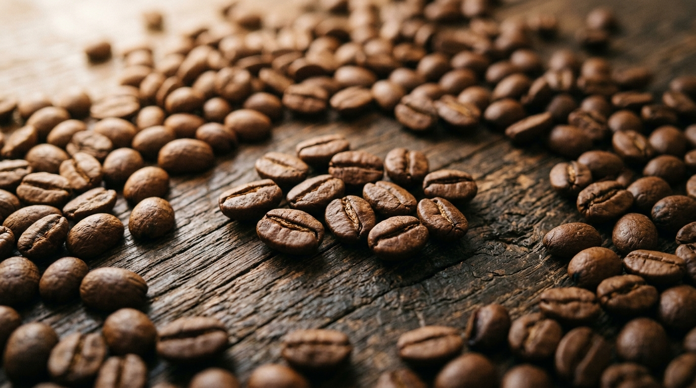
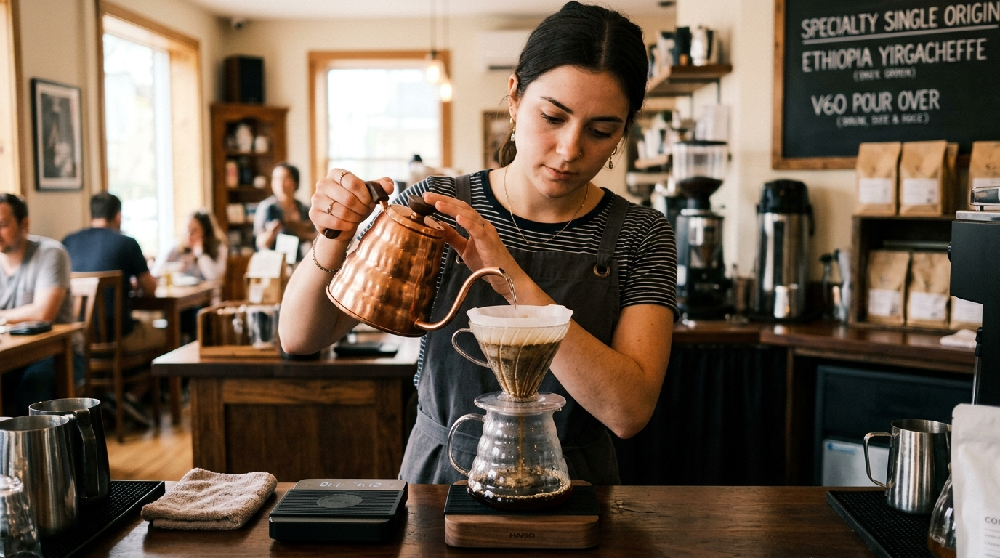

Мир спешелти кофе: философия вкуса и мастерство заваривания
Спешелти зерно и многообразие вкусовых профилей
Современная кофейная культура третьей волны относится к кофе как к сложному гастрономическому напитку, сравнимому с благородным вином. Вкус напитка формируется задолго до того, как зерна попадают в кофемолку: на него влияют высота произрастания кофейных деревьев, состав почвы, климатические особенности региона и метод обработки ягод.

Профессиональные дегустаторы — капперы — оценивают зерна по международной шкале SCA (Specialty Coffee Association). Для знакомства со спешелти индустрией бариста рекомендуют обратить внимание на популярные моносорта:
- Эфиопия Иргачеффе — эталонная высокогорная мытая арабика с деликатными нотами жасмина, бергамота и цитрусовых.
- Колумбия Уила — сбалансированный профиль с яркой яблочной кислотностью, нотами карамели и тростникового сахара.
- Кения АА — насыщенный, сочный кофе с комплексной ягодной кислотностью черной смородины и легким винным послевкусием.
- Бразилия Сантос — классический мягкий вкус с низкой кислотностью и выраженными оттенками фундука, темного шоколада и какао.
Пошаговое приготовление кофе в воронке V60
Альтернативные способы приготовления раскрывают тончайшие вкусовые оттенки зерна. Метод пуровер (ручной пролив через коническую воронку Hario V60) позволяет получить чистый, легкий и ароматный напиток, в котором отчетливо читается терруар.

Для приготовления идеальной чашки методом V60 придерживайтесь следующего проверенного рецепта:
- Установите бумажный фильтр в коническую воронку и тщательно промойте его горячей водой, после чего слейте воду из стеклянного сервера.
- Смолите 15 граммов кофейных зерен со средним помолом (крупнее эспрессо, примерно как морская соль) и засыпьте кофе в центр воронки, сделав небольшое углубление.
- Запустите таймер и аккуратно влейте 45–50 граммов воды температурой 92–94 °C для предсмачивания (блуминга), оставив кофе набухать на 35–45 секунд.
- Плавными спиральными движениями от центра к краям долейте воду несколькими равными проливами до достижения общего веса 250 граммов на весах.
- Дождитесь полного стекания капель в сервер (общее время экстракции должно составить 2:30–3:00 минуты), взболтайте готовый напиток для аэрации и перелейте в прогретую чашку.